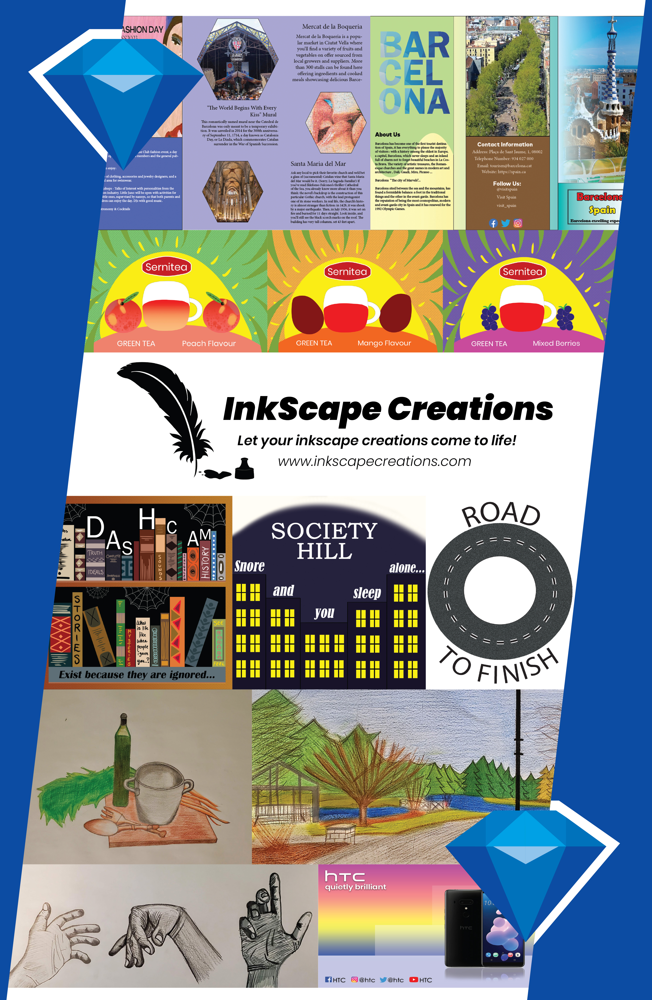

Tool(s) used: Adobe Illustrator
InkScape Creations is a printing brand. I used all my past work from semester 1 to 3 as well as work from Design Foundation. The only challenge I faced here was learning how to create an emerald by scratch as this took some time to do. However, once I watched a YouTube tutorial on how to create one, I was back on track. I finished the poster and then I put my focus on the business card and post card. After printing the materials, I was very satisfied on how they looked. Not only it was high quality but the logo and past work on the poster looked amazing. What I learned from this project is the importance of combining creativity with technical skills to create cohesive branding materials. I learned how to incorporate past work effectively into a new project, showcasing growth and consistency. As a result, I feel more confident in my ability to develop and execute branding concepts from start to finish.